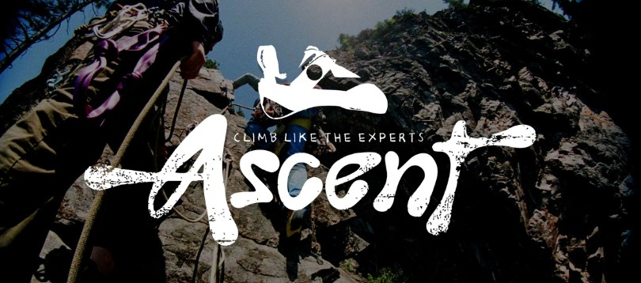
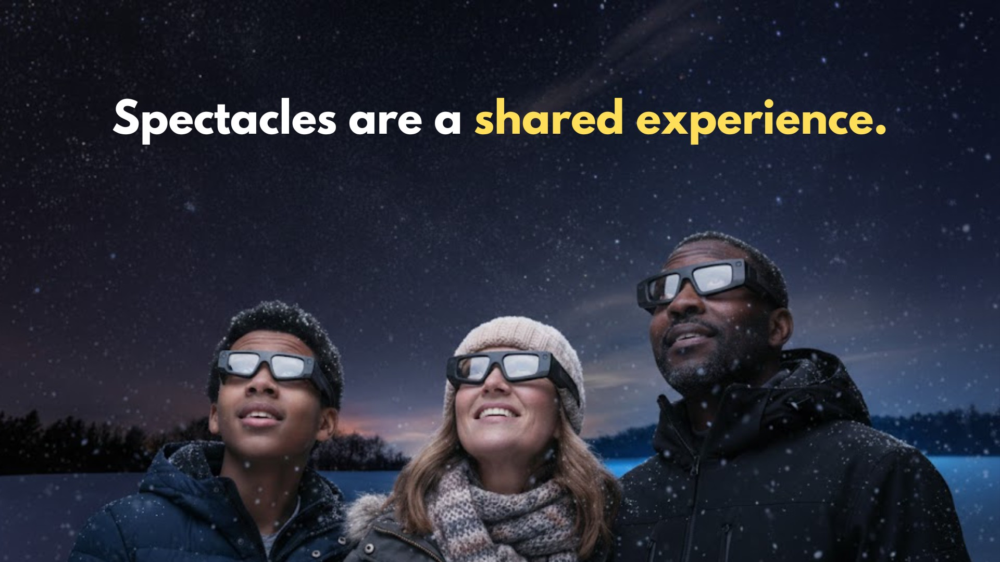
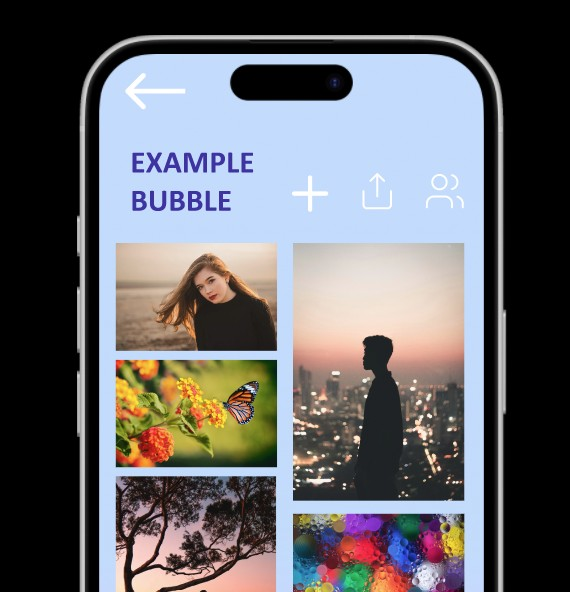
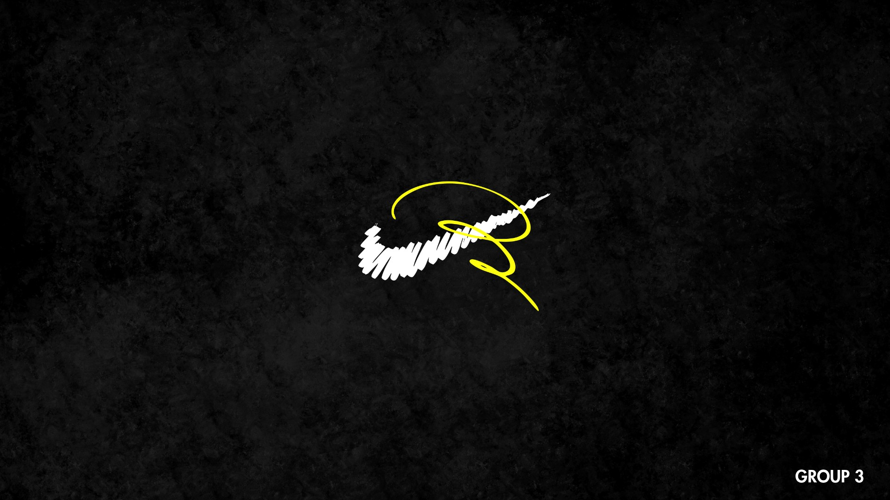
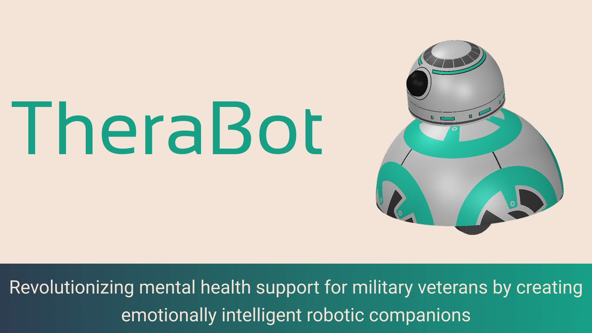
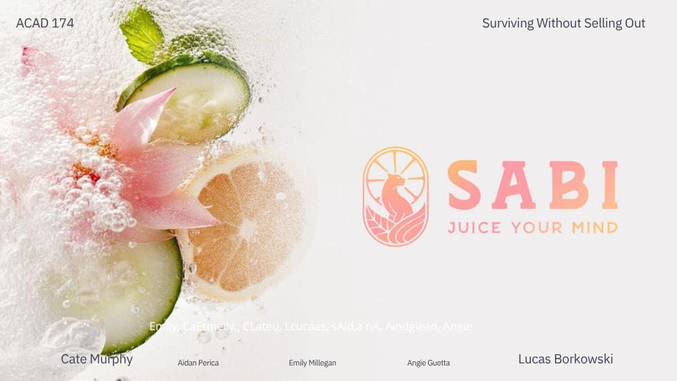
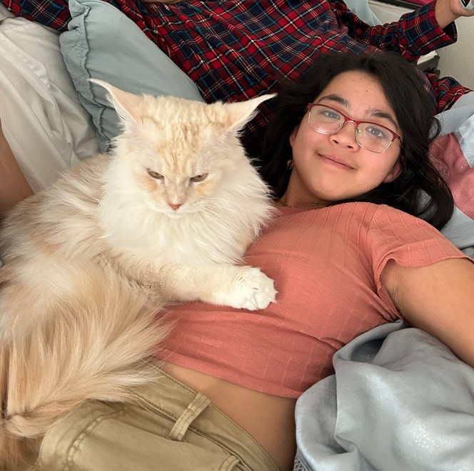
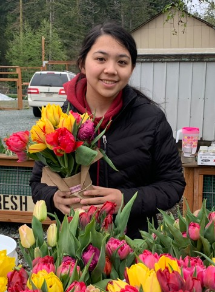
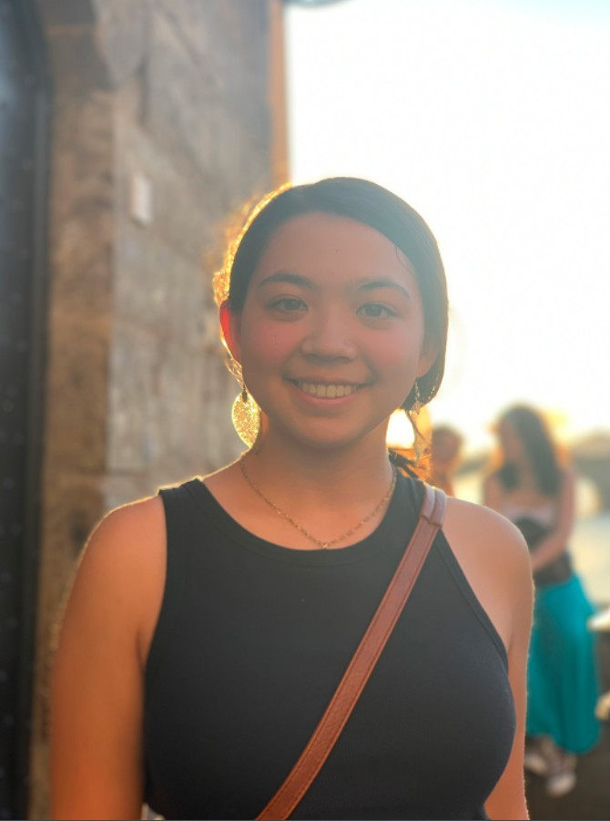
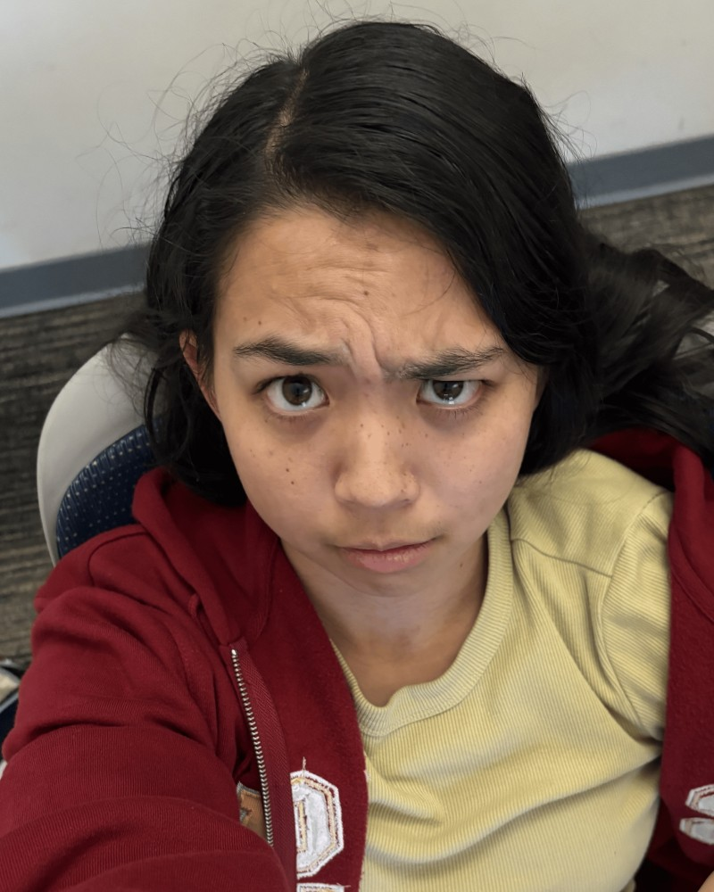

A little curiosity. A lot of possibility.
Hi, I’m Emily.
I make ideas
feel alive.
Designer, developer & creative technologist.
Blending design, technology, and visual storytelling
to make imaginative things that connect.
Thoughtful ideas, made tangible
Selected work
 ↗
↗Charm
AR / Product conceptConnections beyond the screen.

↗Ascent
Product designDesigned for the climb.
 ↗
↗IntoTheTank
Web / DataA better pitch starts here.

↗Spectacles
Strategy / ExperienceA new way to see the holidays.

↗Bubble
UI / UX designMake room for inspiration.

↗Nike
Campaign / Creative directionStarting a conversation that matters.

↗Therabot
Product conceptTechnology with a human touch.

↗Sabi
Brand / StrategyA fresh perspective.
Off the clock, still curious
A little room to play.
Snapshots from the world
outside the project file.




the person behind the pixels ↗A bit about me
Curiosity is
my starting point.
I’m Emily Millegan, a designer and developer interested in building projects that are imaginative and engaging, but also clear and easy to use.
I’m drawn to research, storytelling, and visual design. I like work that has a strong point of view and still feels approachable.
One more thing on the list